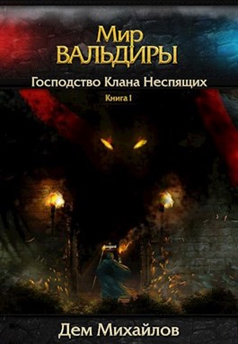

Моя улюблена книга
Сонько М.М
Назва книги:
Господство клана неспящих
Автор:
Дем Михайлов
Жанр книги:
Фантатстика
Рік першого видання:
2013
Огромный мир, наполненный приключениями и древними тайнами, чудовищами, жаждущими твоей смерти.
Мир, в котором каждый может добиться исполнения своих самых заветных желаний и стать кем угодно - удачливым
в делах торговцем, мудрым отшельником, отважным воином или же боевым магом,
которому подвластны разрушительные стихии.
Но не следует ожидать, что твой путь к исполнению мечты будет легким и безоблачным.
Путь к вершине очень долог, если ты вообще до нее дойдешь.
Руслан Алексеевич Михайлов (творческий псевдоним Дем Михайлов)
Русскоязычный писатель-фантаст, один из основоположников русского литРПГ.
Родился 23 ноября 1979 года в городе Заравшан Узбекской ССР, СССР. Закончил
Навойиский промышленный техникум, по специальности «Специалист по разделению
и обогащению благородных и редкоземельных металлов». Некоторое время
золотодобывающем заводе. Двенадцать лет жил в Турции, работал спортивным
аниматором, потом спорт-шефом, менеджером развлекательной анимационной команды,
вернулся в родной город в 2012 году. В настоящее время пытается жить на доходы
от литературной деятельности.
Зміст:
Глава первая Неожиданное окончание игровой сессии
Глава вторая Предложение, от которого нельзя отказаться
Глава третья Возвращение в Ясли. День первый
Глава четвертая Возвращение в Ясли. День второй
Глава пятая Ясли. День третий… и будь оно все проклято!
Глава шестая Ясли. День четвертый. Следом за тайной
Глава седьмая Зар'граад — приманка для акул. Ясли. День пятый. Все во имя клана!
Глава восьмая Последний день в Яслях. Ночной турнир Грима Безутешного. Альгора — город, который не спит
Глава девятая Трудные разговоры и сладкие обещания. Плосефонт — площадь чудаков. Росгард, злые свиньи и темный джедай
Глава десятая Цеховые гильдии. Темная половина Грима Безутешного. Полцарства за коня! Прощай, Альгора!
Глава одиннадцатая Все на лесоповал! Путь к Мшистым Холмам